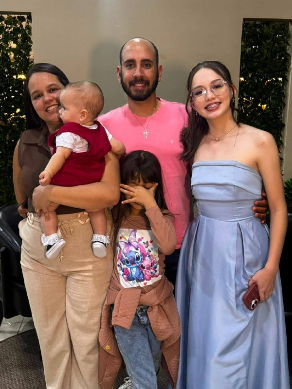

Meu porto seguro
Essa é a minha família! O lugar onde encontro carinho, proteção e amor.
Desde que cheguei, fui recebida com muitos abraços, beijinhos e sorrisos.
E sei que, ao lado deles, vou viver histórias lindas!
As pessoas que me receberam de braços abertos e fazem minha vida ser ainda mais especial.

Essa é a minha família! O lugar onde encontro carinho, proteção e amor.
Desde que cheguei, fui recebida com muitos abraços, beijinhos e sorrisos.
E sei que, ao lado deles, vou viver histórias lindas!

Essa é a minha irmã mais velha, a Eduarda!
Ela é uma das pessoas especiais que fazem parte da minha vida.
Tenho certeza de que vamos compartilhar muitas risadas, brincadeiras e lembranças inesquecíveis.

E essa é a minha outra irmãzinha, a Heloísa!
Agora somos três meninas para encher nossa casa de alegria.
Mal posso esperar para crescer e viver muitas aventuras ao lado das minhas irmãs!

Essa é a minha tia Angélica!
Mais uma pessoa querida que faz parte da minha história e que me recebeu com carinho.

E aqui estou com a tia Tati!
É tão bom ter uma família cheia de pessoas especiais para acompanhar meu crescimento.

Esse é o meu tio Rafa!
Mais um integrante da família que está presente nas minhas primeiras lembranças.

Essa é a tia Jéssica!
Cada pessoa que aparece neste álbum tem um lugar especial na minha história.

Esse é o meu tio Gabriel!
Um dos familiares que fazem parte desse comecinho tão especial da minha vida.

E aqui está o tio Gustavo!
Estou guardando todas essas fotografias para, um dia, olhar para trás e conhecer melhor minhas primeiras lembranças.

Essa é a minha vovó Jana!
Dizem que carinho de vó é uma das coisas mais gostosas que existem.
E eu já estou descobrindo como isso é verdade!

E essa é a minha vovó Heli!
Mais um colo cheio de amor e carinho para guardar nas minhas lembranças.

Esse é o meu vovô César!
Ter meus avós por perto é mais um presente na minha vida.

Essa é a minha bisa Laurinda!
Que privilégio poder guardar uma fotografia ao lado de alguém que carrega tantas histórias de vida.

E aqui estou com a bisa Alice!
Essa fotografia representa o encontro de gerações e o amor que atravessa o tempo.

Essa é a minha bisa Lúcia!
Um dia, quando eu estiver maiorzinha, vou poder olhar para estas fotografias e conhecer um pedacinho das minhas raízes. Essa é a minha família: pessoas diferentes, histórias diferentes, mas um amor enorme que nos une. E eu tenho muita sorte de fazer parte de tudo isso! ♡